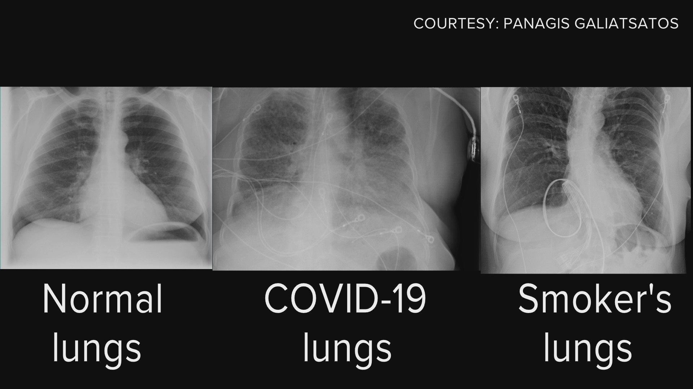
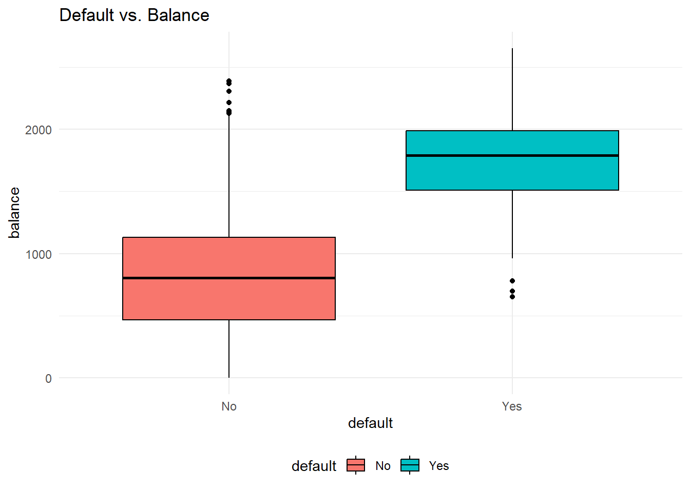
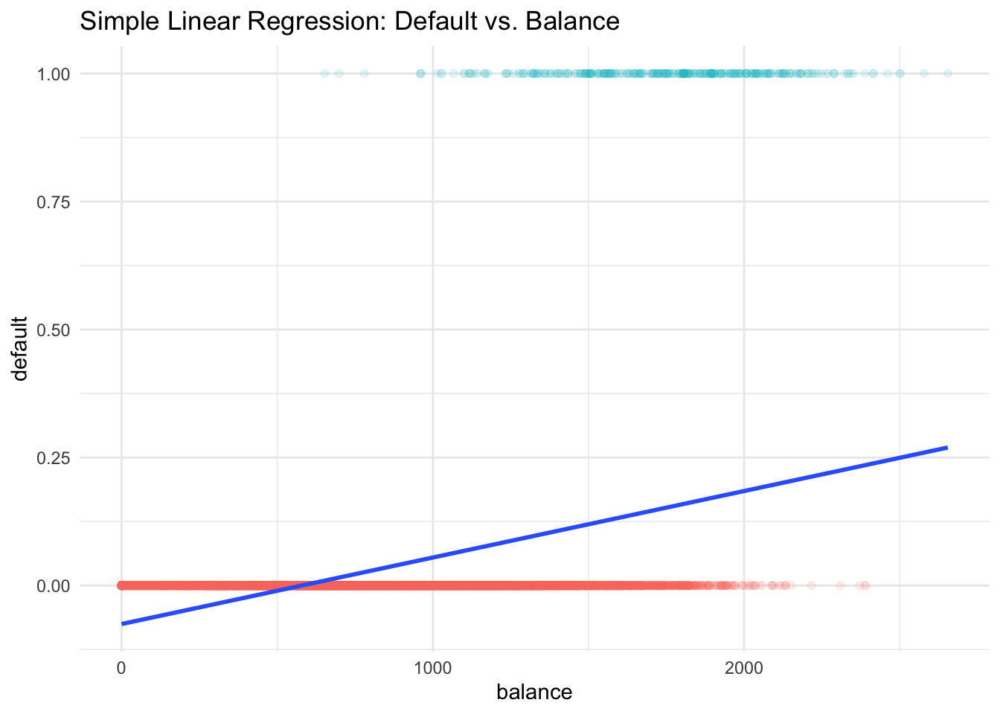
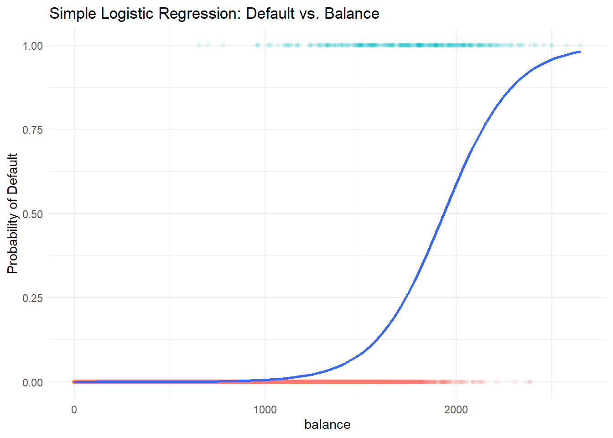
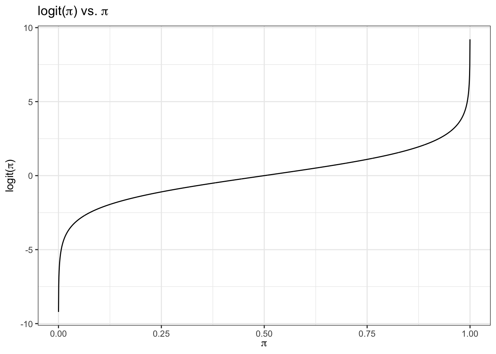
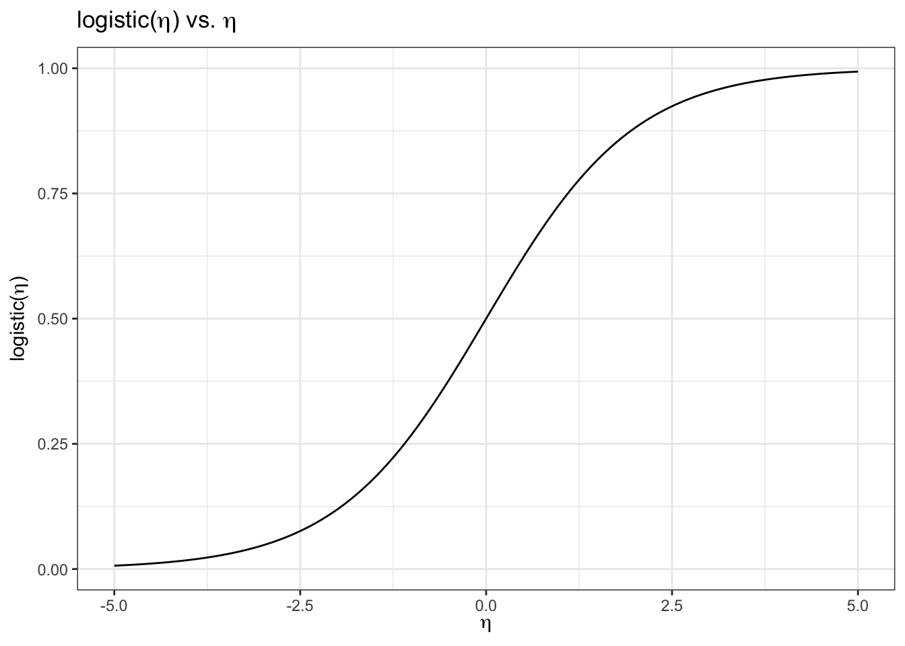
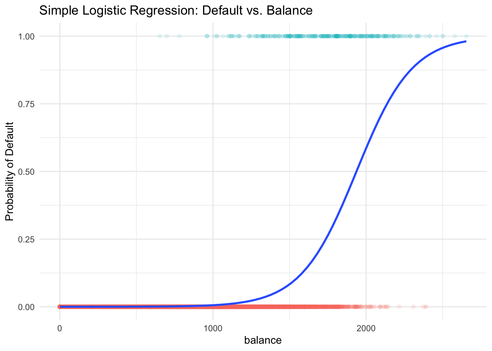
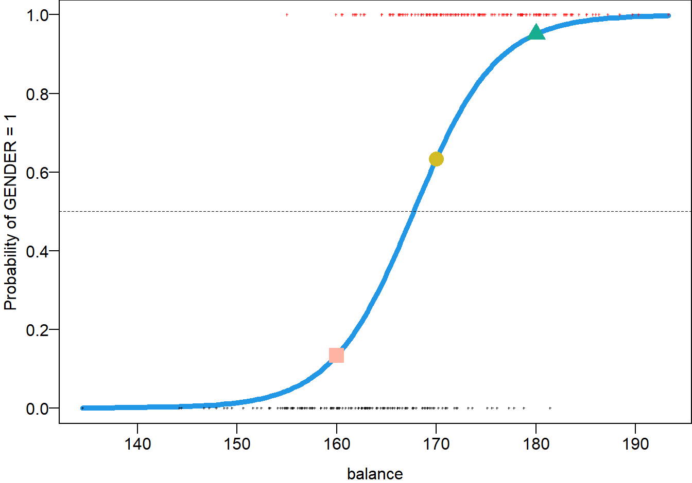
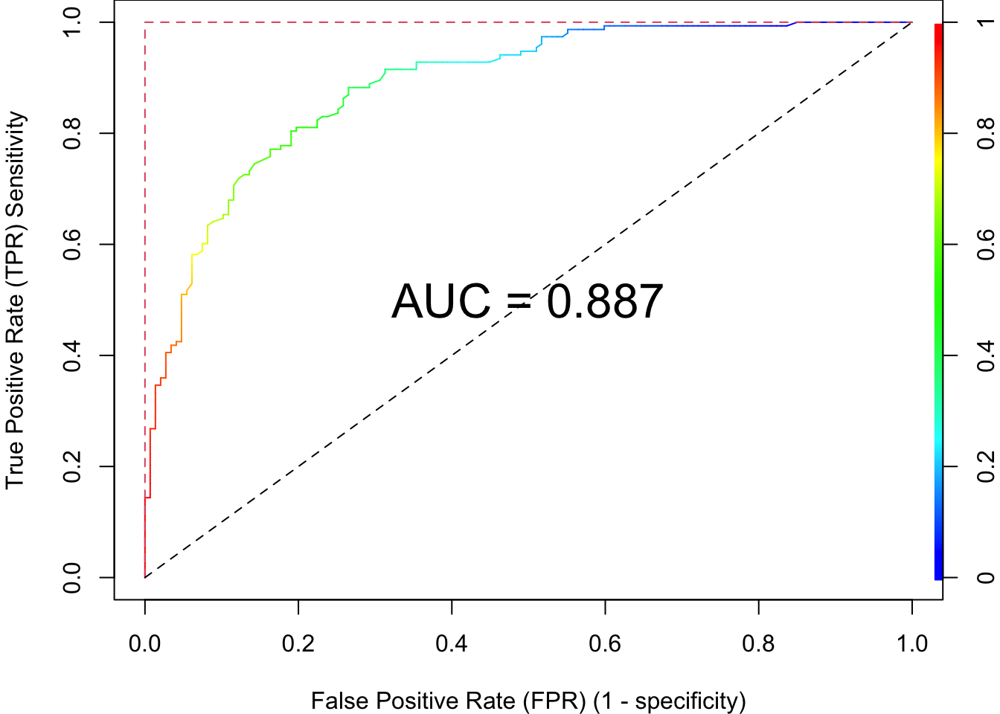

24 Logistic Regression
24.1 Regression vs. Classification
- Linear regression assumes that the response \(Y\) is numerical.
- In many situations, \(Y\) is categorical.
Normal vs. COVID vs. Smoker’s Lungs

Fake vs. Fact
- The process of predicting a categorical response is known as classification.
Regression Function \(f(x)\) vs. Classifier \(C(x)\)

Classification Example
- Predict whether people will default on their credit card payment, where \((Y)\) is
yesorno, based on their monthly credit card balance, \((X)\). - We use the sample data \(\{(x_1, y_1), \dots, (x_n, y_n)\}\) to build a classifier.

Why Not Linear Regression?
\[Y =\begin{cases} 0 & \quad \text{if not default}\\ 1 & \quad \text{if default} \end{cases}\]
- \(Y = \beta_0 + \beta_1X + \epsilon\), \(\, X =\) credit card balance
- \(\hat{Y} = b_0 + b_1X\) estimates \(P(Y = 1 \mid X) = P(default = yes \mid balance)\)

- Some estimates might be outside \([0, 1]\), which doesn’t make sense given that \(Y\) is a probability.
Why Logistic Regression?
- We first predict the probability of each category of \(Y\).
- Then, we predict the probability of
defaultusing an S-shaped curve.

24.2 Introduction to Logistic Regression
Binary Responses
- Treat each outcome, default \((y = 1)\) and not default \((y = 0)\), as success and failure arising from separate Bernoulli trials.
Nonconstant Probability
- Two outcomes: Default \((y = 1)\) and Not Default \((y = 0)\)
- The probability of success, \(\pi\), changes with the value of predictor, \(X\)!
- With a different value of \(x_i\), each Bernoulli trial outcome, \(y_i\), has a different probability of success, \(\pi_i\).

\[ y_i \mid x_i \stackrel{indep}{\sim} \text{Bernoulli}(\pi(x_i)) = binomial(m=1,\pi = \pi(x_i)) \]
-
\(X =\)
balance. \(x_1 = 2000\) has a larger \(\pi_1 = \pi(2000)\) than \(\pi_2 = \pi(500)\) with \(x_2 = 500\) because credit cards with a higher balance are more likely to default.
Logistic Regression
-
Logistic regression models a binary response \((Y)\) using predictors \(X_1, \dots, X_k\).
- \(k = 1\): simple logistic regression
- \(k > 1\): multiple logistic regression
- Instead of predicting \(y_i\) directly, we use the predictors to model its probability of success, \(\pi_i\).
Logit function \(\eta = logit(\pi) = \ln\left(\frac{\pi}{1-\pi}\right)\)
- Transform \(\pi \in (0, 1)\) into another variable \(\eta \in (-\infty, \infty)\). Then fit a linear regression on \(\eta\).
- Logit function: For \(0 < \pi < 1\)
\[\eta = logit(\pi) = \ln\left(\frac{\pi}{1-\pi}\right)\]

Logistic Function \(\pi = logistic(\eta) = \frac{\exp(\eta)}{1+\exp(\eta)}\)
- The logit function \(\eta = logit(\pi) = \ln\left(\frac{\pi}{1-\pi}\right)\) takes a value \(\pi \in (0, 1)\) and maps it to a value \(\eta \in (-\infty, \infty)\).
- Logistic function: \[\pi = logistic(\eta) = \frac{\exp(\eta)}{1+\exp(\eta)} = \frac{1}{1+\exp(-\eta)} \in (0, 1)\]
- The logistic function takes a value \(\eta \in (-\infty, \infty)\) and maps it to a value \(\pi \in (0, 1)\).
- So once \(\eta\) is estimated by the linear regression, we use the logistic function to transform \(\eta\) back to the probability.

24.3 Simple Logistic Regression Model
- For \(i = 1, \dots, n\) and with one predictor \(X\): \[(Y_i \mid X = x_i) \stackrel{indep}{\sim} \text{Bernoulli}(\pi(x_i))\] \[\text{logit}(\pi_i) = \ln \left( \frac{\pi(x_i)}{1 - \pi(x_i)} \right) = \eta_i = \beta_0+\beta_1 x_{i}\]
\[\small \pi_i = \frac{\exp(\beta_0+\beta_1 x_{i})}{1+\exp(\beta_0+\beta_1 x_{i})} = \frac{\exp(\eta_i)}{1 + \exp(\eta_i)}\]
\[\small \hat{\pi}_i = \frac{\exp(\hat{\beta}_0+\hat{\beta}_1 x_{i} )}{1+\exp(\hat{\beta}_0+\hat{\beta}_1 x_{i})}\]
Probability Curve
- The relationship between \(\pi(x)\) and \(x\) is not linear! \[\pi(x) = \frac{\exp(\beta_0+\beta_1 x)}{1+\exp(\beta_0+\beta_1 x)}\]
- The amount that \(\pi(x)\) changes due to a one-unit change in \(x\) depends on the current value of \(x\).
- Regardless of the value of \(x\), if \(\beta_1 > 0\), increasing \(x\) will increase \(\pi(x)\).

Interpretation of Coefficients
- The ratio \(\frac{\pi}{1-\pi} \in (0, \infty)\) is called the odds of some event.
- Example: If 1 in 5 people will default, the odds is 1/4 since \(\pi = 0.2\) implies an odds of \(0.2/(1−0.2) = 1/4\).
\[\ln \left( \frac{\pi(x)}{1 - \pi(x)} \right)= \beta_0 + \beta_1x\]
-Increasing \(x\) by one unit changes the log-odds by \(\beta_1\), or it multiplies the odds by \(e^{\beta_1}\).
- \(\beta_1\) does not correspond to the change in \(\pi(x)\) associated with a one-unit increase in \(x\).
- \(\beta_1\) is the change in log odds associated with one-unit increase in \(x\).
24.4 Logistic Regression in R
-
GENDER = 1if male -
GENDER = 0if female - Use HEIGHT (centimeter, 1 cm = 0.3937 in) to predict/classify GENDER: whether the person is male or female.

body <- read.table("./data/01 - Body Data.txt", header = TRUE)
head(body) AGE GENDER PULSE SYSTOLIC DIASTOLIC HDL LDL WHITE RED PLATE WEIGHT HEIGHT
1 43 0 80 100 70 73 68 8.7 4.80 319 98.6 172.0
2 57 1 84 112 70 35 116 4.9 4.73 187 96.9 186.0
3 38 0 94 134 94 36 223 6.9 4.47 297 108.2 154.4
4 80 1 74 126 64 37 83 7.5 4.32 170 73.1 160.5
5 34 1 50 114 68 50 104 6.1 4.95 140 83.1 179.0
6 77 1 60 134 60 55 75 5.7 3.95 192 86.5 166.7
WAIST ARM_CIRC BMI
1 120.4 40.7 33.3
2 107.8 37.0 28.0
3 120.3 44.3 45.4
4 97.2 30.3 28.4
5 95.1 34.0 25.9
6 112.0 31.4 31.1Data Summary
Model Fitting
logit_fit <- glm(GENDER ~ HEIGHT, data = body, family = "binomial")
(summ_logit_fit <- summary(logit_fit))
Call:
glm(formula = GENDER ~ HEIGHT, family = "binomial", data = body)
Coefficients:
Estimate Std. Error z value Pr(>|z|)
(Intercept) -40.54809 4.63084 -8.756 <2e-16 ***
HEIGHT 0.24173 0.02758 8.764 <2e-16 ***
---
Signif. codes: 0 '***' 0.001 '**' 0.01 '*' 0.05 '.' 0.1 ' ' 1
(Dispersion parameter for binomial family taken to be 1)
Null deviance: 415.77 on 299 degrees of freedom
Residual deviance: 251.50 on 298 degrees of freedom
AIC: 255.5
Number of Fisher Scoring iterations: 5summ_logit_fit$coefficients Estimate Std. Error z value Pr(>|z|)
(Intercept) -40.5480864 4.63083742 -8.756102 2.021182e-18
HEIGHT 0.2417325 0.02758399 8.763507 1.892674e-18- \(\hat{\eta} = \ln \left( \frac{\hat{\pi}}{1 - \hat{\pi}}\right) = -40.55 + 0.24 \times \text{HEIGHT}\)
- \(\hat{\eta}(x) = \hat{\beta}_0 + \hat{\beta}_1x\)
- \(\hat{\eta}(x+1) = \hat{\beta}_0 + \hat{\beta}_1(x+1)\)
- \(\hat{\eta}(x+1) - \hat{\eta}(x) = \hat{\beta}_1 = \ln(\text{odds}_{x+1}) - \ln(\text{odds}_{x}) = \ln \left( \frac{\text{odds}_{x+1}}{\text{odds}_{x}} \right)\)
- A one centimeter increase in
HEIGHTincreases the log odds of being male by 0.24 units. - The odds ratio, \(\widehat{OR} = \frac{\text{odds}_{x+1}}{\text{odds}_{x}} = e^{\hat{\beta}_1} = e^{0.24} = 1.273\).
- The odds of being male increases by 27.3% with an additional one centimeter of
HEIGHT.
Prediction
Pr(GENDER = 1) When HEIGHT is 170 cm
\[ \hat{\pi}(x = 170) = \frac{\exp(\hat{\beta}_0+\hat{\beta}_1 x)}{1+\exp(\hat{\beta}_0+\hat{\beta}_1 x)} = \frac{\exp(-40.55+0.24 \times 170)}{1+\exp(-40.55+0.24 \times 170)} = 0.633 = 63.3\%\]
pi_hat <- predict(logit_fit, type = "response")
eta_hat <- predict(logit_fit, type = "link") ## default gives us b0 + b1*x
predict(logit_fit, newdata = data.frame(HEIGHT = 170), type = "response") 1
0.6333105 Probability Curve
predict(logit_fit, newdata = data.frame(HEIGHT = c(160, 170, 180)), type = "response") 1 2 3
0.1334399 0.6333105 0.9509103 
- 160 cm, Pr(male) = 0.13
- 170 cm, Pr(male) = 0.63
- 180 cm, Pr(male) = 0.95
24.5 Evaluation Metrics
Sensitivity and Specificity
| 1 | 0 | |
|---|---|---|
| Labeled 1 | True Positive (TP) | False Positive (FP) |
| Labeled 0 | False Negative (FN) | True Negative (TN) |
- Sensitivity (True Positive Rate) \(= P( \text{Labeled 1} \mid \text{1}) = \frac{TP}{TP+FN}\)
- Specificity (True Negative Rate) \(= P( \text{Labeled 0} \mid \text{0}) = \frac{TN}{FP+TN}\)
- Accuracy \(= \frac{TP + TN}{TP+FN+FP+TN}\)
- More on Wiki page
Confusion Matrix
prob <- predict(logit_fit, type = "response")
## true observations
gender_true <- body$GENDER
## predicted labels
gender_predict <- (prob > 0.5) * 1
## confusion matrix
table(gender_predict, gender_true) gender_true
gender_predict 0 1
0 118 29
1 29 124Receiver Operating Characteristic (ROC) Curve
-
Receiver operating characteristic (ROC) curve
- Plots True Positive Rate (Sensitivity) vs. False Positive Rate (1 - Specificity)
- R packages for ROC curves: ROCR and pROC, yardstick of Tidymodels

24.6 Exercises
- The following logistic regression equation is used for predicting whether a bear is male or female. The value of \(\pi\) is the probability that the bear is male. \[\log\left(\frac{\pi}{1-\pi}\right) = 2.3 - 0.0573 (\text{Length}) + 0.00842(\text{Weight})\]
- Identify the predictor and response variables. Which of these are dummy variables?
- Given that the variable
Lengthis in the model, does a heavier weight increase or decrease the probability that the bear is a male? Please explain. - The given regression equation has an overall p-value of 0.218. What does that suggest about the quality of predictions made using the regression equation?
- Use a length of 60 in. and a weight of 300 lb to find the probability that the bear is a male. Also, what is the probability that the bear is a female?